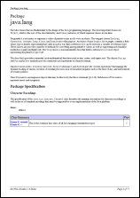

|
 |
It employes almost all recent advances in DocFlex Technology!
Click on a screenshot to view a demo HTML JavaDoc:
The following functionality is fully supported:
This includes:
See also DocFlex/Javadoc | Examples | RTF Demo for more details about that demo RTF and other screenshots.

-> PDF converters,
you can also produce a top quality PDF documentation.
Here is a PDF JavaDoc generated in that way (click on the screenshot to see/download the PDF file, 570 KB):
Such documentation can be used both for printing and publishing on the web.
See also:
For further details about template parameters, please see:
| Main Template Summary | |
|---|---|
| FramedDoc.tpl | Generates framed HTML Java API documentation identical to the classic JavaDoc. |
| PlainDoc.tpl | Generates single-file JavaDoc (both RTF and HTML). |
| Subtemplate Summary | |
|---|---|
| init.tpl | This template produces no output. Instead, it is called only once from either PlainDoc.tpl or FramedDoc.tpl main templates before any other processing starts. The template's job is to create element maps that are critical for the working of other templates. |
| Basic Content Subtemplates | Generate pages (or sections) that provide primary information about the Java project |
| overview.tpl | Generates the documentation Overview page/section (an equivalent of the overview-summary.html file generated by the Standard Doclet). |
| package.tpl | Generates a Package Overview page/section for every Java package being documented (an equivalent of the package-summary.html file generated by the Standard Doclet), which includes package description, tags and summary tables of contained classes. |
| class.tpl | Generates a Class Details page/section for a class/interface/enum or an annotation type. The class details may include the class description, various reference lists about it, as well as the details of all documented members of that class (except nested classes). This provides the bulk of the whole Java API documentation. |
| Cross-Reference Page Subtemplates | Generate pages of framed HTML documentation that help to quickly find the necessary information |
| class-summary.tpl | Generates the All Classes Summary page, which is loaded when clicking on “All Classes” item in the navigation bar in framed HTML documentation. |
| package-use.tpl | Generates a “use” page for each documented package. The page describes which packages and classes use any API of the given package. |
| class-use.tpl | Generates a “use” page for each documented class. The page describes which packages, classes, methods, constructors and fields use any API of the given class. |
| class-tree.tpl | Generates class/interface hierarchy pages. These are the pages you reach using the “Tree” button in the navigation bar. |
| deprecated-list.tpl |
Generates the
deprecated API page
('deprecated-list.html' file), which contains the list of deprecated APIs,
and the “Deprecated” link in the
navigation bar
to that page.
|
| index-all.tpl |
Generates a single
index page
('index-all.html' file).
It is used when no splitting
of the index into multiple files has been specified.
|
| index-letter.tpl |
Generates for a particular letter either a section of the whole
index
file (i.e. 'index-all.html' generated by
index-all.tpl)
or a corresponding separate index page ('index-*.html').
|
| serialized-form.tpl | This template generates the serialized form page, which provides information about serializable and externalizable classes. |
| constant-values.tpl |
This template generates the
constant field values page
('constant-values.html' file), which lists the static final fields and their values.
|
| Support File Subtemplates | Generate files that help navigation of framed HTML documentation and connecting to it |
| help-doc.tpl | Generates the help page. This is the page you reach using the “Help” button in the navigation bar. |
| overview-frame.tpl | Generates the primary navigation page, which includes the lists all packages and other primary links. It is used in the upper-left "overview" frame. |
| all-classes-frame.tpl | Generates a navigation page with the list of all documented classes. It is loaded in the lower-left "summary" frame. |
| package-frame.tpl | Generates a separate navigation page for each documented package, which is loaded into the lower-left "summary" frame on clicking on the corresponding package in the "overview" frame. |
| package-list.tpl | Generates a Package List file, which is a plain-text file that lists the names of all documented packages (or those containing the documented classes). |
| Section Subtemplates | Generate separate (relatively large) sections of the documentation (however, never separate files) |
| package-summary.tpl | Generate a package summary table included in the general Overview (produced overview.tpl template). |
| title-page.tpl | Generates the Title Page (which will be the front page of the RTF documentation). |
| TOC.tpl | Generates the Table Of Contents of the documentation. |
| Fragment Subtemplates | Called from other templates to generate small (but frequent) fragments of the documentation |
| navbar.tpl | Generates all navigation bars found the framed HTML documentation. |
| annotations.tpl | Generates the list of annotations (along with all related hyperlinks) of a package, class, member or constructor/method parameter. |
| see-link.tpl | Processes a user-defined cross-reference to related documentation. |
| inline-tag.tpl | Processes most of the inline tags. |
| about.tpl | Adds the About section at the bottom of each separate output document. It displays the information about DocFlex/Javadoc product along with the hyperlinks to this website. |
But introducing and checking parameters in templates is much easier than implementing some command-line options controlling a Java code. (In fact, it is writing a parameter description what takes the most time in many cases!) So, there can be a lot more template parameters than in the case of in traditional “command-line options” approach.
“JavadocPro” currently provides more than 70 parameters.
On the following screenshot you can see the Parameter Inspector loaded with the parameters of FramedDoc.tpl (click to view an expanded form):
The inspector content is constructed dynamically from the parameter definitions found in the given template.
Using Parameter Inspector, you can:
Please see: Documentation | DocFlex Doclet | Handling Template Parameters | Setting parameters from command line
For more information about this capability and its implementation, see also:
The standard Javadoc does not support this and unlikely will ever do.
That's because such a feature is pretty much controversial:
|
You will hardly find any other tool able to generate such a complex RTF!
Since all the generated documentation output is programmed entirely in templates (which are open for any changes), now you can:
| The primary way to do it is by modifying the templates in the Template Designer. However, you can also edit templates directly as plain text (e.g. using Windows Notepad). Templates files are plain text files in UTF-8 encoding. You can change any text labels there and write any symbols (even hieroglyphs). For that matter, see also: Licensing of Templates | Custom Templates | Changing Templates Manually. |
What is needed for all this? A license covering the Template Designer, that is the full license for “DocFlex/Javadoc” (see also Full Edition).
There are two modes: limited and full.
What you can:
| If you are not particularly happy with the new JavaDoc design introduced in Java 7, you can use “JavadocPro” to generate the classic-looking JavaDoc under Java 7 too. |
All template parameters equivalent to Standard Doclet options will be unlocked.
That's free!
What you cannot: